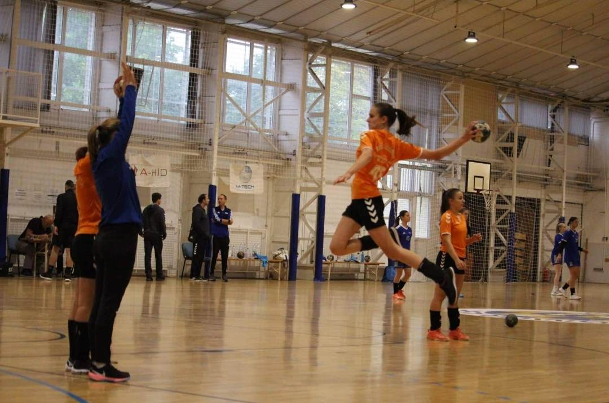

ÜDVÖZLÜNK A KÉT KÉZI SZTÁRUNK HIVATALOS FAN OLDALÁN
BREAKING NEWS: KMSE - HÓDMEZŐVÁSÁRHELY 10:30-TÓL
CSAPATTAL KAPCSOLATOS HÍREK
KÖVESD ÉLŐBEN A HÓDMEZŐVÁSÁRHELY ELLENI MÉRKŐZÉST 10:30-TÓL A DISCORD SZERVERÜNKÖN, VAGY A KÉZI SZÖVETSÉG HONLAPJÁRÓL

GRATÁLUNK LILLA, A KIEMELKEDŐ EREDMÉNYÉHEZ! JELENLEG NEKI VAN AZ LU17 II. OSZTÁLY-KELET VERSENYZŐI KÖZÜL AZ 5. LEGJOBB STATISZTIKÁJA. A HILDA SE SZOMORKODJON, MIVEL Ő A 33.